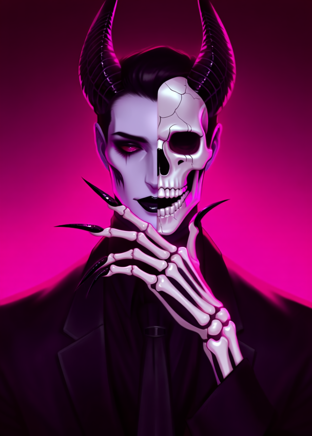

<meta charset="utf-8">
<title>Trois images, une démarche</title>
<meta name="claude:viewport-fit-sides" content="cover">
<link rel="preconnect" href="https://fonts.googleapis.com">
<link rel="preconnect" href="https://fonts.gstatic.com" crossorigin>
<link rel="stylesheet" href="https://fonts.googleapis.com/css2?family=Fraunces:ital,opsz,wght@0,9..144,300;0,9..144,400;1,9..144,300;1,9..144,400&family=IBM+Plex+Mono:wght@400;500&family=Inter:wght@400;500;600&display=swap">
<style>
/* Layout : 10 slides 1080×1350 (4:5) cadrées comme des cartes de deckbuilder ;
   bleu = l'outil / les repères, magenta = l'autrice / l'intention. */
:root {
  --ink: #09090F;
  --ink-2: #12121B;
  --line: rgba(244, 242, 247, .13);
  --bone: #F4F2F7;
  --bone-2: #C9C6D3;
  --mute: #8E8A9C;
  --blue: #287BFF;
  --mag: #E735AD;
  --f-display: "Fraunces", Georgia, "Times New Roman", serif;
  --f-body: "Inter", system-ui, -apple-system, "Helvetica Neue", sans-serif;
  --f-mono: "IBM Plex Mono", ui-monospace, Menlo, monospace;
  --grain: url("data:image/svg+xml;utf8,<svg xmlns='http://www.w3.org/2000/svg' width='240' height='240'><filter id='n'><feTurbulence type='fractalNoise' baseFrequency='0.85' numOctaves='2' stitchTiles='stitch'/><feColorMatrix values='0 0 0 0 1  0 0 0 0 1  0 0 0 0 1  0 0 0 .55 0'/></filter><rect width='100%' height='100%' filter='url(%23n)'/></svg>");
  color-scheme: dark;
}
html, body { background: var(--ink); color: var(--bone); }
body { margin: 0; font-family: var(--f-body); font-size: 15px; line-height: 1.5; -webkit-font-smoothing: antialiased; }
*, *::before, *::after { box-sizing: border-box; }

/* ───────── Page d'aperçu ───────── */
.wrap {
  max-width: 1320px; margin: 0 auto;
  padding-block: 40px 72px;
  padding-left: max(16px, env(safe-area-inset-left, 0px));
  padding-right: max(16px, env(safe-area-inset-right, 0px));
  display: grid; gap: 40px;
}
.page-head { display: grid; gap: 10px; max-width: 70ch; }
.page-head .eyebrow { font-family: var(--f-mono); font-size: 12px; letter-spacing: .14em; text-transform: uppercase; color: var(--blue); margin: 0; }
.page-head h1 { font-family: var(--f-display); font-weight: 300; font-size: clamp(32px, 5vw, 48px); line-height: 1.05; letter-spacing: -.02em; margin: 0; text-wrap: balance; }
.page-head p { margin: 0; color: var(--bone-2); }
.deck { display: grid; grid-template-columns: repeat(auto-fill, minmax(260px, 1fr)); gap: 28px 20px; }
.item { margin: 0; display: grid; gap: 10px; min-width: 0; }
.item figcaption { font-family: var(--f-mono); font-size: 12px; letter-spacing: .08em; color: var(--mute); }
.item figcaption b { color: var(--bone); font-weight: 500; }
.frame { position: relative; width: 100%; max-width: 100%; aspect-ratio: 1080 / 1350; overflow: hidden; border: 1px solid var(--line); }
.frame > .slide { position: absolute; top: 0; left: 0; transform: scale(var(--k, .25)); transform-origin: 0 0; }

.caption-box { display: grid; gap: 14px; max-width: 72ch; border-top: 1px solid var(--line); padding-top: 28px; }
.caption-box h2 { font-family: var(--f-display); font-weight: 300; font-size: 28px; margin: 0; }
.caption-box .row { display: flex; gap: 12px; align-items: center; flex-wrap: wrap; }
.caption-box pre { margin: 0; white-space: pre-wrap; font-family: var(--f-body); font-size: 15px; line-height: 1.6; color: var(--bone-2); background: var(--ink-2); border: 1px solid var(--line); padding: 18px 20px; min-width: 0; }
.btn { font: 500 13px/1 var(--f-mono); letter-spacing: .06em; color: var(--ink); background: var(--bone); border: 0; padding: 10px 14px; cursor: pointer; }
.btn:hover { background: var(--mag); color: var(--bone); }
.btn:focus-visible { outline: 2px solid var(--blue); outline-offset: 3px; }
.copied { font-family: var(--f-mono); font-size: 12px; color: var(--mag); }

/* ───────── Slide : socle commun ───────── */
.slide {
  width: 1080px; height: 1350px; overflow: hidden;
  background: radial-gradient(120% 80% at 50% 38%, #11111C 0%, var(--ink) 62%);
  color: var(--bone); font-family: var(--f-body);
}
.slide::after { /* grain cinéma */
  content: ""; position: absolute; inset: 0; pointer-events: none; z-index: 5;
  background-image: var(--grain); background-size: 240px 240px; opacity: .07; mix-blend-mode: overlay;
}
.slide p, .slide h1, .slide h2, .slide ul, .slide ol, .slide figure, .slide blockquote { margin: 0; padding: 0; }
.slide ul, .slide ol { list-style: none; }
.slide em { font-style: italic; }
.mag { color: var(--mag); }
.blue { color: var(--blue); }

/* Cadre de carte + barres (injectés par le script) */
.chrome { position: absolute; inset: 0; z-index: 4; pointer-events: none; }
.cf { position: absolute; inset: 36px; border: 1px solid rgba(244, 242, 247, .14); }
.cf i { position: absolute; width: 12px; height: 12px; background: var(--ink); border: 1px solid rgba(244, 242, 247, .45); transform: rotate(45deg); }
.cf i:nth-child(1) { top: -7px; left: -7px; }
.cf i:nth-child(2) { top: -7px; right: -7px; }
.cf i:nth-child(3) { bottom: -7px; left: -7px; }
.cf i:nth-child(4) { bottom: -7px; right: -7px; }
.bar { position: absolute; left: 88px; right: 88px; display: flex; justify-content: space-between; align-items: baseline;
  font-family: var(--f-mono); font-size: 22px; letter-spacing: .16em; text-transform: uppercase; color: var(--mute); }
.bar.top { top: 68px; }
.bar.bot { bottom: 66px; }
.bar .pg { color: var(--blue); font-variant-numeric: tabular-nums; }
.bar .swipe { color: var(--mag); }

.content { position: absolute; top: 150px; bottom: 150px; left: 88px; right: 88px; display: flex; flex-direction: column; z-index: 2; }
.h2 { font-family: var(--f-display); font-weight: 300; font-size: 84px; line-height: 1.02; letter-spacing: -.025em; text-wrap: balance; }
.h2 em { font-weight: 300; }
.tag { font-family: var(--f-mono); font-size: 22px; letter-spacing: .16em; text-transform: uppercase; }
.note { margin-top: auto !important; font-family: var(--f-mono); font-size: 23px; line-height: 1.45; letter-spacing: .01em; color: var(--mute); text-wrap: balance; }
.list { display: grid; gap: 16px; }
.list li { position: relative; padding-left: 34px; font-size: 38px; line-height: 1.25; color: var(--bone-2); }
.list li::before { content: ""; position: absolute; left: 2px; top: .52em; width: 11px; height: 11px; transform: rotate(45deg); background: currentColor; }
.list.l-blue li::before { background: var(--blue); }
.list.l-mag li::before { background: var(--mag); }

/* Recadrages par point focal (visage) */
.crop { position: relative; overflow: hidden; background: var(--ink-2); }
.crop img { position: absolute; inset: 0; width: 100%; height: 100%; max-width: none; object-fit: cover; display: block; }

/* 01 · Couverture */
.bands { position: absolute; inset: 0; display: grid; grid-template-columns: repeat(3, 1fr); gap: 3px; background: var(--ink); }
.bands .crop { height: 100%; }
.cover-shade { position: absolute; inset: 0; z-index: 1;
  background: linear-gradient(to bottom, rgba(9,9,15,.7) 0%, rgba(9,9,15,0) 13%, rgba(9,9,15,0) 40%, rgba(9,9,15,.9) 58%, var(--ink) 68%); }
.cover-text { position: absolute; left: 88px; right: 88px; bottom: 150px; z-index: 2; display: grid; gap: 30px; }
.kicker { font-family: var(--f-mono); font-size: 26px; letter-spacing: .16em; text-transform: uppercase; color: var(--blue); }
.cover-text h1 { font-family: var(--f-display); font-weight: 300; font-size: 132px; line-height: .96; letter-spacing: -.03em; }
.cover-sub { font-size: 44px; line-height: 1.25; color: var(--bone-2); text-wrap: balance; }

/* 02 · Outil / intention */
.s-split .cols { margin-block: auto; display: grid; grid-template-columns: 1fr 1fr; }
.s-split .note { margin-top: 0 !important; }
.s-split .col { display: grid; align-content: start; gap: 32px; padding-top: 34px; border-top: 2px solid var(--blue); }
.s-split .col + .col { border-top-color: var(--mag); margin-left: 40px; }
.s-split .col:first-child { padding-right: 40px; border-right: 1px solid var(--line); }
.s-split .q { font-family: var(--f-display); font-weight: 400; font-size: 52px; line-height: 1.1; letter-spacing: -.015em; color: var(--bone); text-wrap: balance; }
.s-split .list { gap: 20px; }
.s-split .list li { font-size: 37px; }

/* 03 · Triptyque */
.trip { margin-top: 52px; display: grid; grid-template-columns: repeat(3, 1fr); gap: 20px; }
.trip figure { display: grid; gap: 22px; }
.trip .crop { height: 640px; }
.trip figcaption { display: grid; grid-template-columns: auto 1fr; column-gap: 16px; align-items: baseline; }
.num { font-family: var(--f-display); font-weight: 300; color: var(--blue); }
.trip .num { font-size: 64px; line-height: 1; grid-row: span 2; }
.trip .nm { font-size: 32px; font-weight: 600; letter-spacing: -.01em; }
.trip .sub { font-family: var(--f-mono); font-size: 19px; color: var(--mute); letter-spacing: .02em; }

/* 04–06 · Une image */
.focus-head { display: flex; align-items: baseline; gap: 24px; }
.focus-head .num { font-size: 96px; line-height: 1; }
.focus-head .dash { font-family: var(--f-display); font-weight: 300; font-size: 72px; color: var(--mute); }
.focus-head .fname { font-family: var(--f-display); font-weight: 300; font-size: 84px; line-height: 1; letter-spacing: -.025em; }
.focus-head .fsub { margin-left: auto; font-family: var(--f-mono); font-size: 21px; letter-spacing: .1em; text-transform: uppercase; color: var(--mute); text-align: right; }
.stage { position: relative; flex: 1; min-height: 0; margin: 40px 0 36px; }
.stage img { position: absolute; inset: 0; margin: auto; display: block; max-width: 100%; max-height: 100%; width: auto; height: auto; outline: 1px solid rgba(244,242,247,.16); outline-offset: 0; box-shadow: 0 30px 80px rgba(0,0,0,.6); }

/* 07 · Citation */
.s-quote .content { justify-content: center; align-items: center; text-align: center; gap: 44px; }
.qmark { font-family: var(--f-display); font-style: italic; font-weight: 300; font-size: 220px; line-height: .5; color: var(--mag); height: 90px; }
.s-quote blockquote { font-family: var(--f-display); font-weight: 300; font-size: 56px; line-height: 1.2; letter-spacing: -.015em; text-wrap: balance; }
.s-quote blockquote em { font-weight: 400; }
.sig { font-family: var(--f-mono); font-size: 23px; letter-spacing: .14em; text-transform: uppercase; color: var(--mute); }
.sig::before { content: ""; display: block; width: 64px; height: 1px; background: var(--mag); margin: 0 auto 26px; }

/* 08 · Chaîne de décisions */
.chain { margin-top: 64px; display: grid; }
.chain li { position: relative; height: 140px; display: grid; grid-template-columns: 76px 1fr; column-gap: 40px; align-items: center; }
.chain .node { width: 76px; height: 76px; border-radius: 50%; border: 2px solid var(--blue); display: grid; place-items: center;
  font-family: var(--f-mono); font-size: 24px; color: var(--blue); font-variant-numeric: tabular-nums; background: var(--ink); }
.chain .ct { font-family: var(--f-display); font-weight: 300; font-size: 54px; line-height: 1.05; letter-spacing: -.02em; }
.chain li:not(:last-child)::before { content: ""; position: absolute; left: 37px; top: 114px; height: 46px; width: 2px; background: rgba(40,123,255,.55); }
.chain li:not(:last-child)::after { content: ""; position: absolute; left: 32px; top: 145px; width: 12px; height: 12px;
  border-right: 2px solid var(--blue); border-bottom: 2px solid var(--blue); transform: rotate(45deg); }
.chain li.key .node { background: var(--mag); border-color: var(--mag); color: var(--ink); font-weight: 500; }
.chain li.key .ct { color: var(--mag); font-style: italic; }

/* 09 · queen's pact */
.s-pact .kicker { color: var(--mag); }
.pact-title { font-family: var(--f-display); font-style: italic; font-weight: 300; font-size: 150px; line-height: .95; letter-spacing: -.035em; margin-top: 18px !important; }
.pact-sub { margin-top: 18px !important; font-size: 40px; line-height: 1.25; color: var(--bone-2); }
.duo { margin-top: 64px; display: grid; gap: 40px; }
.blk { display: grid; gap: 18px; }
.blk + .blk { padding-top: 40px; border-top: 1px solid var(--line); }
.blk .big { font-family: var(--f-display); font-weight: 400; font-size: 56px; line-height: 1.05; letter-spacing: -.02em; }
.blk .body { font-size: 38px; line-height: 1.3; color: var(--bone-2); }
.blk .pull { font-family: var(--f-display); font-style: italic; font-weight: 300; font-size: 46px; line-height: 1.15; color: var(--mag); }
.blk .list li { font-size: 34px; }

/* 10 · Clôture */
.s-close .bands { opacity: .5; }
.s-close .cover-shade { background: linear-gradient(to bottom, rgba(9,9,15,.75) 0%, rgba(9,9,15,.35) 14%, rgba(9,9,15,.55) 30%, rgba(9,9,15,.95) 44%, var(--ink) 52%); }
.close-text { position: absolute; left: 88px; right: 88px; bottom: 150px; z-index: 2; display: grid; gap: 40px; }
.close-text h2 { font-family: var(--f-display); font-weight: 300; font-size: 112px; line-height: .98; letter-spacing: -.03em; text-wrap: balance; }
.close-q { font-size: 44px; line-height: 1.28; color: var(--bone); text-wrap: pretty; }
.close-q .blue, .close-q .mag { font-weight: 600; }
.cta { padding-top: 30px; border-top: 1px solid var(--line); font-size: 32px; line-height: 1.35; color: var(--bone-2); }

/* ───────── Impression / export PDF (1 slide = 1 page) ───────── */
@page { size: 1080px 1350px; margin: 0; }
@media print {
  html, body { margin: 0 !important; padding: 0 !important; background: var(--ink); }
  .page-head, .caption-box, .item figcaption { display: none !important; }
  .wrap { display: block; max-width: none; padding: 0; }
  .deck { display: block; }
  .item { display: block; margin: 0; }
  .frame { width: 1080px; height: 1350px; border: 0; break-after: page; page-break-after: always; }
  .frame > .slide { transform: none !important; }
  .slide { -webkit-print-color-adjust: exact; print-color-adjust: exact; }
}
@media (prefers-reduced-motion: no-preference) {
  .btn { transition: background .16s ease, color .16s ease; }
}
</style>

<main class="wrap">
  <header class="page-head">
    <p class="eyebrow">Carrousel LinkedIn · 10 slides · 1080 × 1350</p>
    <h1>Trois images, une démarche</h1>
    <p>1 Gemini · 2 ChatGPT · 3 Stable Bibi, le modèle de l’autrice. Chaque image est montrée en entier sur sa propre slide ; seules la couverture, le triptyque et la clôture la recadrent sur le visage.</p>
  </header>

  <div class="deck">

    <!-- 01 · Couverture -->
    <figure class="item"><div class="frame">
      <section class="slide s-cover" aria-label="Slide 1 : couverture">
        <div class="bands">
          <div class="crop"></div>
          <div class="crop"></div>
          <div class="crop"></div>
        </div>
        <div class="cover-shade"></div>
        <div class="cover-text">
          <p class="kicker">Trois images. Zéro classement.</p>
          <h1>Toutes les IA<br>se valent&nbsp;?</h1>
          <p class="cover-sub">Alors pourquoi ces images ne racontent-elles pas <span class="mag">la même chose</span>&nbsp;?</p>
        </div>
      </section>
    </div><figcaption><b>01</b> · Couverture</figcaption></figure>

    <!-- 02 · Outil / intention -->
    <figure class="item"><div class="frame">
      <section class="slide s-split" aria-label="Slide 2 : l’outil produit, l’intention dirige">
        <div class="content">
          <h2 class="h2">L’outil produit.<br><em class="mag">L’intention dirige.</em></h2>
          <div class="cols">
            <div class="col">
              <p class="tag blue">Côté outil</p>
              <p class="q">Quel résultat produit l’outil&nbsp;?</p>
              <ul class="list l-blue">
                <li>rendu</li>
                <li>style «&nbsp;par défaut&nbsp;»</li>
                <li>régularité</li>
              </ul>
            </div>
            <div class="col">
              <p class="tag mag">Côté autrice</p>
              <p class="q">Que cherche à construire l’autrice&nbsp;?</p>
              <ul class="list l-mag">
                <li>intention</li>
                <li>choix du modèle</li>
                <li>direction artistique</li>
                <li>cohérence d’univers</li>
              </ul>
            </div>
          </div>
          <p class="note">Ici, le sujet = les décisions. Pas une promesse de supériorité.</p>
        </div>
      </section>
    </div><figcaption><b>02</b> · Outil / intention</figcaption></figure>

    <!-- 03 · Triptyque -->
    <figure class="item"><div class="frame">
      <section class="slide s-trip" aria-label="Slide 3 : trois images issues d’une exploration">
        <div class="content">
          <h2 class="h2">Trois images issues<br>d’une exploration</h2>
          <div class="trip">
            <figure>
              <div class="crop"></div>
              <figcaption><span class="num">1</span><span class="nm">Gemini</span></figcaption>
            </figure>
            <figure>
              <div class="crop"></div>
              <figcaption><span class="num">2</span><span class="nm">ChatGPT</span></figcaption>
            </figure>
            <figure>
              <div class="crop"></div>
              <figcaption><span class="num">3</span><span class="nm">Stable Bibi</span><span class="sub">modèle de l’autrice</span></figcaption>
            </figure>
          </div>
          <p class="note">Processus créatif — pas une expérience contrôlée (pas de protocole commun documenté).</p>
        </div>
      </section>
    </div><figcaption><b>03</b> · Triptyque</figcaption></figure>

    <!-- 04 · Gemini -->
    <figure class="item"><div class="frame">
      <section class="slide s-focus" aria-label="Slide 4 : image 1, Gemini">
        <div class="content">
          <header class="focus-head"><span class="num">1</span><span class="dash">—</span><span class="fname">Gemini</span><span class="fsub">Sans recadrage</span></header>
          <div class="stage"></div>
          <p class="note">On regarde d’abord. On commente ensuite.</p>
        </div>
      </section>
    </div><figcaption><b>04</b> · 1 — Gemini</figcaption></figure>

    <!-- 05 · ChatGPT -->
    <figure class="item"><div class="frame">
      <section class="slide s-focus" aria-label="Slide 5 : image 2, ChatGPT">
        <div class="content">
          <header class="focus-head"><span class="num">2</span><span class="dash">—</span><span class="fname">ChatGPT</span><span class="fsub">Sans recadrage</span></header>
          <div class="stage"></div>
          <p class="note">On regarde d’abord. On commente ensuite.</p>
        </div>
      </section>
    </div><figcaption><b>05</b> · 2 — ChatGPT</figcaption></figure>

    <!-- 06 · Stable Bibi -->
    <figure class="item"><div class="frame">
      <section class="slide s-focus" aria-label="Slide 6 : image 3, Stable Bibi, modèle de l’autrice">
        <div class="content">
          <header class="focus-head"><span class="num">3</span><span class="dash">—</span><span class="fname">Stable Bibi</span><span class="fsub">Modèle de<br>l’autrice</span></header>
          <div class="stage"></div>
          <p class="note">Exploration personnelle — pas un classement universel.</p>
        </div>
      </section>
    </div><figcaption><b>06</b> · 3 — Stable Bibi</figcaption></figure>

    <!-- 07 · Citation -->
    <figure class="item"><div class="frame">
      <section class="slide s-quote" aria-label="Slide 7 : citation">
        <div class="content">
          <span class="qmark" aria-hidden="true">«</span>
          <blockquote>Pour celles et ceux qui disent que toutes les IA se valent et qu’on ne peut pas avoir de démarche artistique&nbsp;: en réentraînant mes modèles sur mon travail, je perds en <span class="blue">précision</span>, mais <em class="mag">c’est la démarche qui prend le relais.</em>&nbsp;»</blockquote>
          <p class="sig">Lydie · autrice de queen’s pact</p>
        </div>
      </section>
    </div><figcaption><b>07</b> · Citation</figcaption></figure>

    <!-- 08 · Les décisions -->
    <figure class="item"><div class="frame">
      <section class="slide s-chain" aria-label="Slide 8 : les décisions de l’artiste">
        <div class="content">
          <h2 class="h2">Ce qui prend le relais&nbsp;:<br><em class="mag">les décisions de l’artiste</em></h2>
          <ol class="chain">
            <li><span class="node">01</span><span class="ct">Intention</span></li>
            <li><span class="node">02</span><span class="ct">Choix du modèle</span></li>
            <li class="key"><span class="node">03</span><span class="ct">Réentraînement sur mon travail</span></li>
            <li><span class="node">04</span><span class="ct">Sélection</span></li>
            <li><span class="node">05</span><span class="ct">Direction &amp; cohérence</span></li>
          </ol>
          <p class="note">Ça décrit une démarche. Pas une causalité technique «&nbsp;prouvée&nbsp;».</p>
        </div>
      </section>
    </div><figcaption><b>08</b> · Les décisions</figcaption></figure>

    <!-- 09 · queen's pact -->
    <figure class="item"><div class="frame">
      <section class="slide s-pact" aria-label="Slide 9 : queen’s pact">
        <div class="content">
          <p class="kicker">Le projet</p>
          <h2 class="pact-title">queen’s pact</h2>
          <p class="pact-sub">Une icône, un univers, une intention.</p>
          <div class="duo">
            <div class="blk">
              <p class="tag blue">Univers</p>
              <p class="big">Dark fantasy gothique × K-pop</p>
              <p class="body">Une figure centrale&nbsp;: <span class="mag">La Reine juge</span></p>
            </div>
            <div class="blk">
              <p class="tag mag">Contexte créatif</p>
              <p class="big">Deckbuilder roguelite</p>
              <p class="pull">«&nbsp;Tu dois divertir la Reine de l’Underworld.&nbsp;»</p>
              <ul class="list l-mag">
                <li>La cohérence vient de l’axe narratif + DA.</li>
                <li>L’IA = outil de production, pas argument central.</li>
              </ul>
            </div>
          </div>
        </div>
      </section>
    </div><figcaption><b>09</b> · queen’s pact</figcaption></figure>

    <!-- 10 · Clôture -->
    <figure class="item"><div class="frame">
      <section class="slide s-close" aria-label="Slide 10 : clôture">
        <div class="bands" aria-hidden="true">
          <div class="crop"></div>
          <div class="crop"></div>
          <div class="crop"></div>
        </div>
        <div class="cover-shade"></div>
        <div class="close-text">
          <h2>L’outil n’efface pas <em class="mag">l’autrice.</em></h2>
          <p class="close-q">Quand vous regardez une image générée, jugez-vous seulement sa <span class="blue">précision</span>… ou aussi la <span class="mag">démarche</span> qui l’a construite&nbsp;?</p>
          <p class="cta">Si vous voulez, je peux détailler mon process (sans «&nbsp;recette miracle&nbsp;»).</p>
        </div>
      </section>
    </div><figcaption><b>10</b> · Clôture</figcaption></figure>

  </div>

  <section class="caption-box" aria-labelledby="cap-title">
    <h2 id="cap-title">Légende du post</h2>
    <pre id="caption">On parle beaucoup de “quelle IA est la meilleure”.
Moi, j’essaie de déplacer la question : quelles décisions une autrice prend pour construire un univers ?

Ici : 3 images issues d’une exploration (pas un test contrôlé).
Ce que je défends : l’outil produit, mais l’intention dirige.

Question : quand vous voyez une image générée, vous jugez quoi en premier — la précision, ou la démarche ?</pre>
    <div class="row">
      <button class="btn" id="copy-caption" type="button">Copier la légende</button>
      <span class="copied" id="copy-status" role="status"></span>
    </div>
  </section>
</main>

<script>
(function () {
  var SERIES = 'Trois images · une démarche';
  var SIGNATURE = 'Lydie · queen’s pact';

  // Cadre de carte, pagination et signature sur chaque slide
  var slides = Array.prototype.slice.call(document.querySelectorAll('.slide'));
  var total = slides.length;
  slides.forEach(function (s, i) {
    var c = document.createElement('div');
    c.className = 'chrome';
    c.setAttribute('aria-hidden', 'true');
    var pg = String(i + 1).padStart(2, '0') + ' / ' + String(total).padStart(2, '0');
    c.innerHTML =
      '<div class="cf"><i></i><i></i><i></i><i></i></div>' +
      '<div class="bar top"><span>' + SERIES + '</span><span class="pg">' + pg + '</span></div>' +
      '<div class="bar bot"><span>' + SIGNATURE + '</span>' + (i < total - 1 ? '<span class="swipe">Glisser →</span>' : '') + '</div>';
    s.appendChild(c);
  });

  // Recadrage : place le point focal (visage) au point cible du cadre, sans laisser de vide
  function place(img) {
    var box = img.parentElement;
    var W = box.offsetWidth, H = box.offsetHeight, w = img.naturalWidth, h = img.naturalHeight;
    if (!w || !h || !W || !H) return;
    var f = (img.dataset.focal || '0.5 0.35').split(' ').map(Number);
    var t = (img.dataset.target || '0.5 0.3').split(' ').map(Number);
    var s = Math.max(W / w, H / h,
      (t[0] * W) / (f[0] * w), ((1 - t[0]) * W) / ((1 - f[0]) * w),
      (t[1] * H) / (f[1] * h), ((1 - t[1]) * H) / ((1 - f[1]) * h));
    img.style.objectFit = 'fill';
    img.style.inset = 'auto';
    img.style.width = (w * s) + 'px';
    img.style.height = (h * s) + 'px';
    img.style.left = (t[0] * W - f[0] * w * s) + 'px';
    img.style.top = (t[1] * H - f[1] * h * s) + 'px';
  }
  Array.prototype.forEach.call(document.querySelectorAll('.crop img[data-focal]'), function (img) {
    if (img.complete) place(img); else img.addEventListener('load', function () { place(img); });
  });

  // Mise à l'échelle des slides dans l'aperçu
  var frames = Array.prototype.slice.call(document.querySelectorAll('.frame'));
  function fit(f) { f.style.setProperty('--k', f.clientWidth / 1080); }
  frames.forEach(fit);
  if ('ResizeObserver' in window) {
    var ro = new ResizeObserver(function (entries) { entries.forEach(function (e) { fit(e.target); }); });
    frames.forEach(function (f) { ro.observe(f); });
  } else {
    window.addEventListener('resize', function () { frames.forEach(fit); });
  }

  // Copier la légende
  var btn = document.getElementById('copy-caption');
  var status = document.getElementById('copy-status');
  var cap = document.getElementById('caption');
  btn.addEventListener('click', function () {
    var text = cap.textContent;
    function selectIt() {
      var r = document.createRange(); r.selectNodeContents(cap);
      var sel = window.getSelection(); sel.removeAllRanges(); sel.addRange(r);
      status.textContent = 'Texte sélectionné : copiez-le avec Ctrl+C / Cmd+C';
    }
    try {
      navigator.clipboard.writeText(text).then(function () { status.textContent = 'Légende copiée'; }, selectIt);
    } catch (e) { selectIt(); }
  });
})();
</script>
